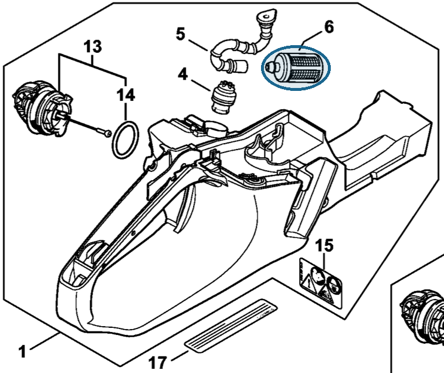
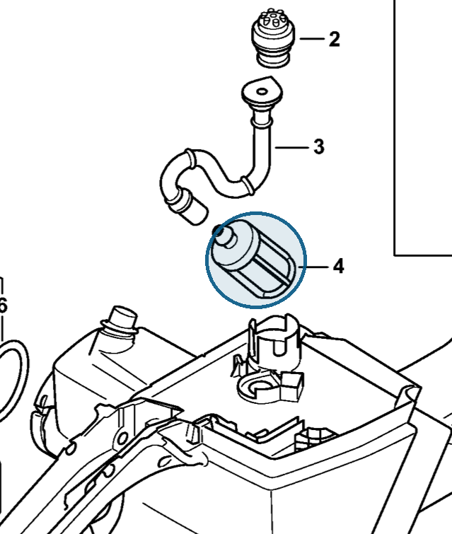

Pickup body
0000 350 3518
MS 261 — fuel tank
Fuel pickup body inside the tank, on fuel hose (item 5).
Item 6 Qty listed: 1

MS 261 C-M spare-parts list, 10/02/2023. Drawing p. 21; parts table p. 22.
MS 462 — fuel tank
Fuel pickup body inside the tank, on fuel hose (item 3).
Item 4 Qty listed: 1

MS 462 C-M Z spare-parts list, 10/29/2024. Drawing p. 23; parts table p. 24.